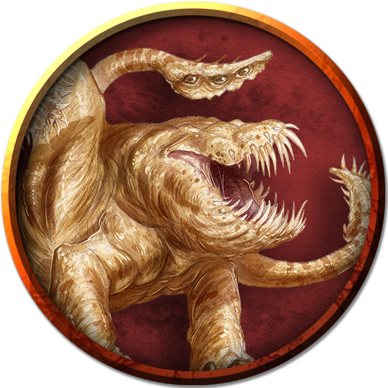

Otyugh
An otyugh is a grotesque, bulbous creature borne along on three sturdy legs, its eyes and nose set along a vine-like stalk that snakes from the top of its bloated body. Two rubbery tentacles end in spiky, leaf-like appendages that the otyugh uses to shovel food into its gaping maw.
An otyugh buries itself under mounds of offal and carrion, leaving only its sensory stalk exposed. When an edible creature happens by, the otyugh's tentacles erupt from the filth and grab hold of it.
Otyughs make the most of any opportunity to ambush and devour prey. They use a limited form of telepathy to urge sentient creatures toward their lairs, sometimes by pretending to be something else.
Dwellers in Darkness. Otyughs tolerate bright light only when considerable stores of carrion or garbage lie within reach. In the wilderness, they dwell in stagnant swamps, scum-filled ponds, and damp forest dells. The scent of graveyards, city sewers, village middens, and manure-filled animal pens attracts them to civilized areas.
Since otyughs lack concern for anything but food, their nests sometimes accumulate a variety of treasures shed from their victims and mixed among the junk.
Symbiotic Guardians. Sentient subterranean beings can coexist with otyughs, employing them as garbage disposals. With such plentiful sustenance, otyughs grow fat in their wallows, unmoved by any other drive or desire. This sedentary gluttony makes them reliable guardians. As long as it is fed, an otyugh refrains from attacking other creatures. However, would-be otyugh masters can easily underestimate the quantity of waste, carrion, and meat necessary to keep an otyugh from wandering off in search of food. More than one "trained" otyugh has eaten its keeper after devouring all the waste in its wallow.
Environment
Forest, Ruins, Swamp, Underdark, Urban
Token

Otyugh
Large aberration, neutral
- Armor Class 14 (natural armor)
- Hit Points 114 (12d10 + 48)
- Speed 30 ft.
STR DEX CON INT WIS CHA 16 (+3) 11 (+0) 19 (+4) 6 (-2) 13 (+1) 6 (-2)
- Proficiency Bonus +3
- Saving Throws Con +7
- Damage Vulnerabilities
- Damage Resistances
- Damage Immunities
- Condition Immunities
- Skills
- Senses darkvision 120 ft.,passive Perception 11
- Languages Otyugh
- Challenge 5
Limited Telepathy. The otyugh can magically transmit simple messages and images to any creature within 120 feet of it that can understand a language. This form of telepathy doesn't allow the receiving creature to telepathically respond.
Actions
Multiattack. The otyugh makes three attacks: one with its bite and two with its tentacles.
Bite. Melee Weapon Attack: +6 to hit, reach 5 ft., one target. Hit: 12 (2d8 + 3) piercing damage. If the target is a creature, it must succeed on a DC 15 Constitution saving throw against disease or become poisoned until the disease is cured. Every 24 hours that elapse, the target must repeat the saving throw, reducing its hit point maximum by 5 (1d10) on a failure. The disease is cured on a success. The target dies if the disease reduces its hit point maximum to 0. This reduction to the target's hit point maximum lasts until the disease is cured.
Tentacle. Melee Weapon Attack: +6 to hit, reach 10 ft., one target. Hit: 7 (1d8 + 3) bludgeoning damage plus 4 (1d8) piercing damage. If the target is Medium or smaller, it is grappled (escape DC 13) and restrained until the grapple ends. The otyugh has two tentacles, each of which can grapple one target.
Tentacle Slam. The otyugh slams creatures grappled by it into each other or a solid surface. Each creature must succeed on a DC 14 Constitution saving throw or take 10 (2d6 + 3) bludgeoning damage and be stunned until the end of the otyugh's next turn. On a successful save, the target takes half the bludgeoning damage and isn't stunned.